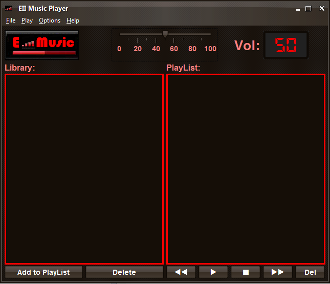

EII Music Player
EII Music Player es un reproductor de archivos MP3 que permite acceder a todas las canciones de tu
ordenador e importarlas a su libreria. De esta libreria se pueden pasar a la lista de reproduccion y
comenzar a disfrutar de su musica.

Las opciones del reproductor son las siguientes:
- Play: reproduce la cancion seleccionada o la primera cancion de la lista de reproduccion.
- Stop: finaliza la reproduccion actual.
- Rewind: reproduce la cancion anterior de la lista de reproduccion.
- Forward: reproduce la siguiente cancion de la lista de reproduccion.
- Del: elimina la cancion o canciones seleccionadas.